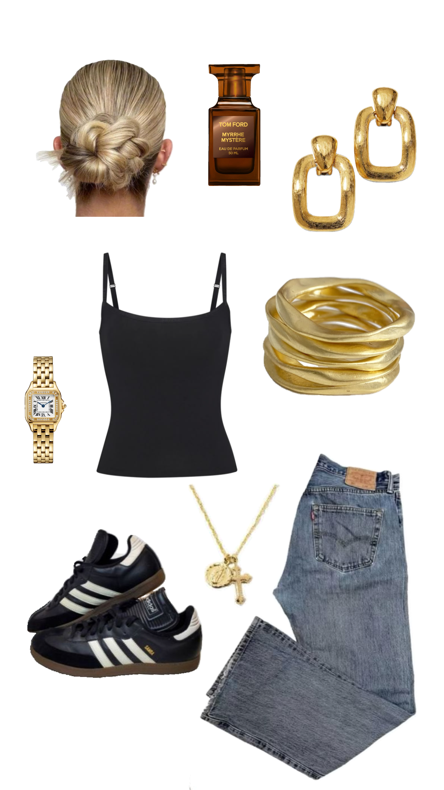
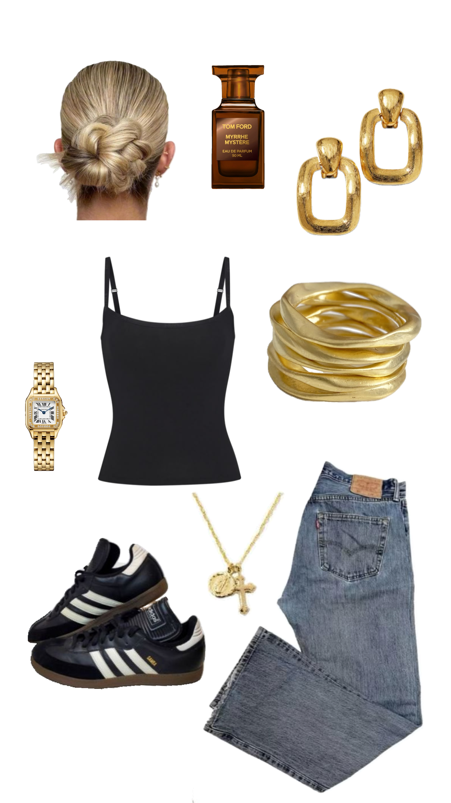

Sobre mim
Meu nome é Caroline Santibanez, tenho 18 anos e nasci em 07 de agosto de 2006. Sou uma pessoa bastante ativa e gosto de me manter em movimento, principalmente com a prática de corrida. Além de cuidar do corpo, também gosto de ler livros de terror misturado com romance. Um bom livro sempre me proporciona novas descobertas e uma pausa no dia a dia. Outro dos meus hobbies favoritos é montar looks para o dia a dia. me divirto criando diferentes combinações de roupas me faz sentir ainda mais confiante e conectada comigo mesma. Acredito que o estilo pessoal é uma maneira incrível de mostrar quem somos, e gosto de variar nas minhas escolhas, dependendo do meu humor e da ocasião. Além disso, sou fã de MPB (Música Popular Brasileira), um gênero que me traz boas emoções. A música tem o poder de transformar momentos, e a MPB, com sua riqueza de melodias e letras, faz parte do meu dia a dia, seja para relaxar, refletir ou até mesmo me inspirar. Acredito que é importante cultivar atividades que trazem prazer, saúde e bem-estar. Seja correndo, lendo, ouvindo MPB ou me expressando através dos meus looks, estou sempre buscando novas formas de crescer e aproveitar a vida ao máximo.


Projetos
Uma das coisas que gosto de fazer é criar looks no Pinterest. É uma forma simples de combinar diferentes peças de roupas e experimentar novos estilos. Gosto de explorar como as roupas podem se encaixar de maneiras diferentes, de acordo com o meu humor ou situação. O Pinterest é uma boa ferramenta para encontrar inspirações e ideias de looks, seja para algo mais casual ou mais elaborado. Para mim, a moda é uma forma de me expressar e me sentir confortável. Quando monto meus looks, é uma maneira de escolher o que vestir de forma mais prática e pessoal.
Looks do pinterest
 


Acompanhe-me nas minhas redes sociais.
Estou presente em diversas plataformas para compartilhar meu trabalho e minhas ideias. No YouTube, publico vídeos com conteúdos de beleza e meu dia a dia. No Instagram, compartilho momentos do meu dia a dia e algumas das minhas produções. No Pinterest, você encontrará uma seleção de ideias e inspirações, seja sobre estilo, design ou outras áreas que me interessam. A plataforma é um lugar para colecionar referências e descobrir novas possibilidades.